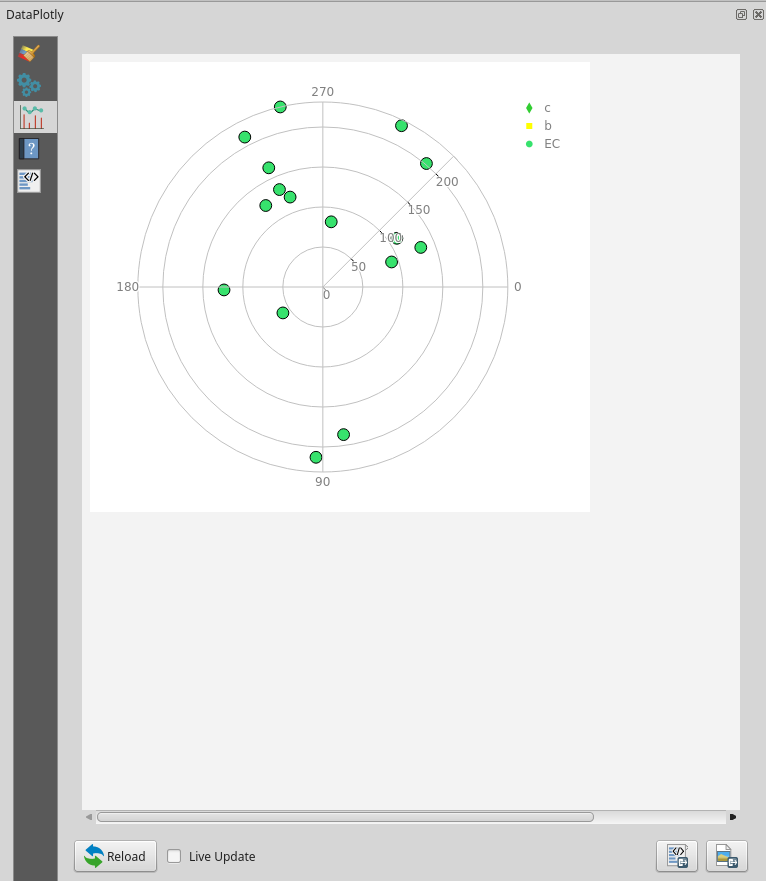

Polar Plot
Here you will find the guide to every parameter of the polar plot. If you need more generic information please see DataPlotly Basic Usage.


Plot Properties
Layer: the combobox will display all the vector layers loaded in QGIS
X Field: the X field
Y Field: the Y field
Marker Color: marker color
Marker Size: the size of the marker
Stroke Color: border color
Stroke Width: the width of the border
Transparency: transparency level of the marker/line
Plot Customizations
Show Legend: show the legend of the current plot
Plot Title: the plot title
Legend Title: the title of the legend